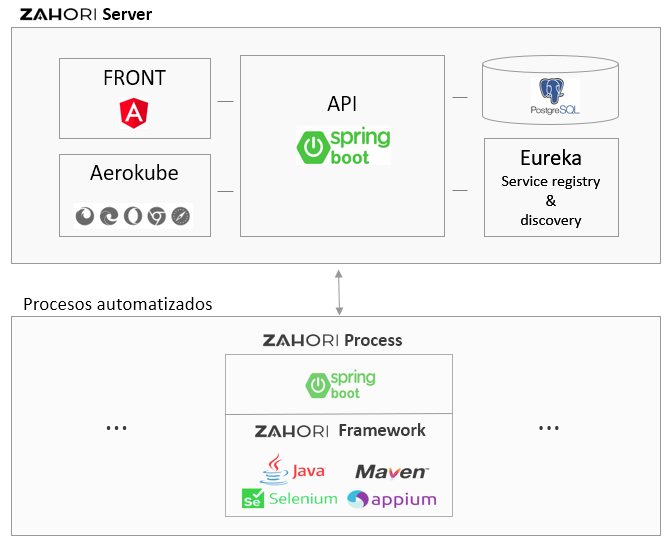

Introduction¶
Welcome to our documentation site. We’ll introduce you quickly to the Zahori ecosystem so that you can start using it as soon as possible.
What is Zahori?¶
Zahorí is an Open Source platform (see applicable License, AGPLv3) to automatize processes, software tests or any repetitive task that can be performed with a computer running a user applicacion or custom software.
Main application uses are related with RPA, automatization software, web tests, APIs tests, etc.
Zahorí can run on Linux, Mac and Windows systems.
How does it work?¶
Zahorí is built with two well differentiated building blocks: automatizing processes and the server.
See also
For a general introduction visit Zahori main site.
Paragraphs¶
The paragraph (:duref:`ref <paragraphs>`) is the most basic block in a reST document. Paragraphs are simply chunks of text separated by one or more blank lines. As in Python, indentation is significant in reST, so all lines of the same paragraph must be left-aligned to the same level of indentation.
Inline markup¶
The standard reST inline markup is quite simple: use
one asterisk:
*text*for emphasis (italics),two asterisks:
**text**for strong emphasis (boldface), andbackquotes:
``text``for code samples.
If asterisks or backquotes appear in running text and could be confused with inline markup delimiters, they have to be escaped with a backslash.
Be aware of some restrictions of this markup:
it may not be nested,
content may not start or end with whitespace:
* text*is wrong,it must be separated from surrounding text by non-word characters. Use a backslash escaped space to work around that:
thisis\ *one*\ word.
These restrictions may be lifted in future versions of the docutils.
It is also possible to replace or expand upon some of this inline markup with roles. Refer to rst-roles-alt for more information.